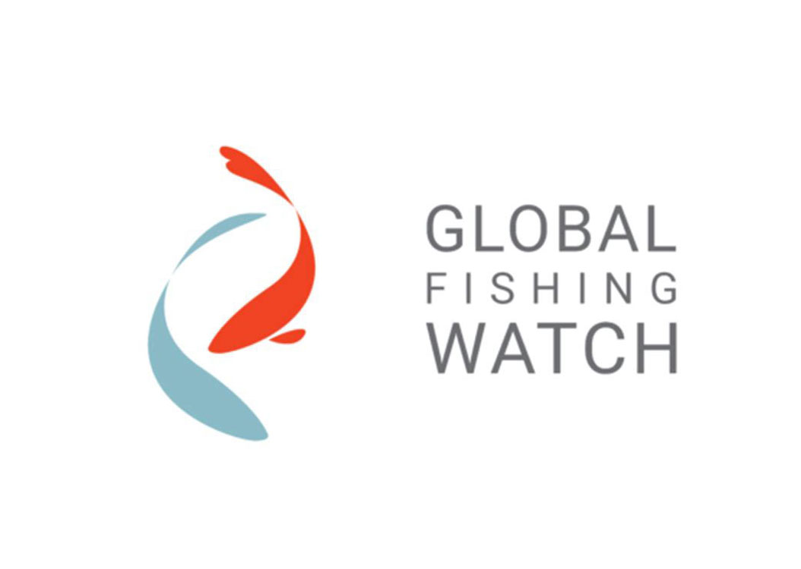

My Blog
Hey there! Thank you for visiting my website. While I'm currently working on new content, I wanted to share a preview of what's to come. Below, you'll find a taste of what I'll be publishing in my blog. I hope you enjoy it. Stay tuned for more updates!
Creating and Interactive Planner using R Shiny
As part of my Master's project for The Nature Conservancy, I have been developing the Gaviota Region Interactive Planner, an R Shiny app designed to visualize and evaluate spatial environmental data in the Santa Barbara County region.....
Read more →

Extracting GFW's Fishing Effort Data using Earth Engine Python API
In this post we will dive into the world of Google Earth Engine (GEE) datasets and how to access them using the Python API. Our focus will be on a dataset from Global Fishing Watch (GFW) which provides daily fishing effort as inferred fishing hours. We will take you through the steps of how to read in the dataset, visualize the data, and extract...
Read more →